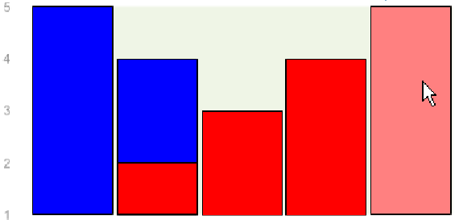
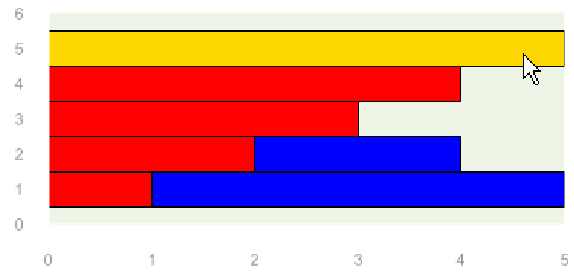

[next] [prev] [prev-tail] [tail] [up]
This effect highlights the chart element under mouse :

The default behavior is this one, but you can chang the highlighting color :
For example :
will produce the following effect :

[next] [prev] [prev-tail] [front] [up]